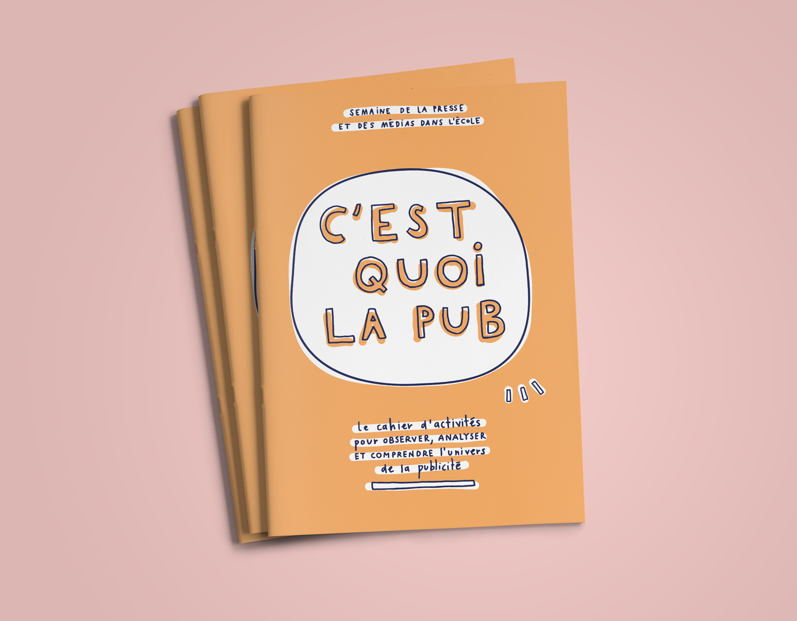
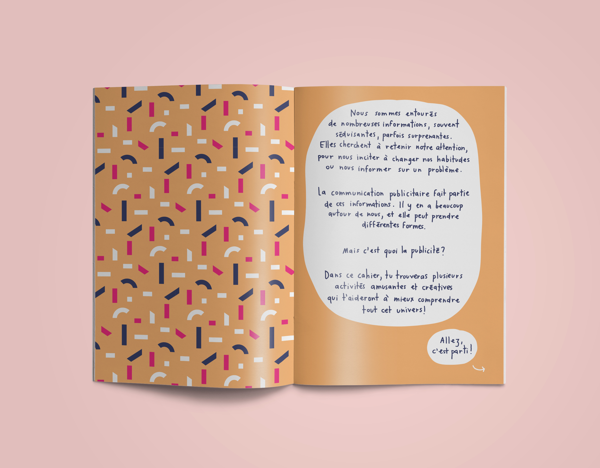
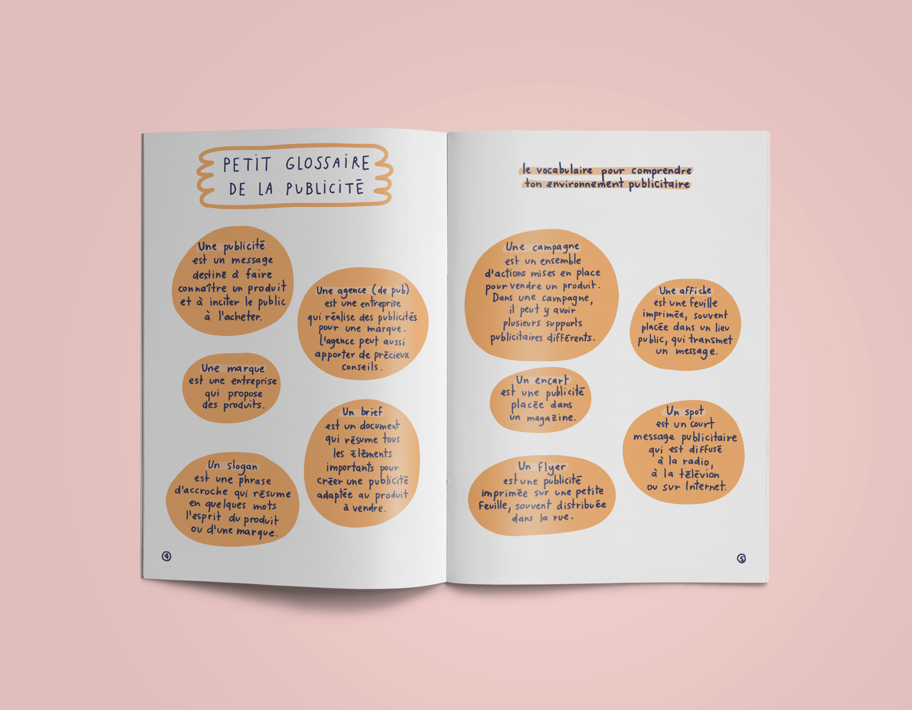
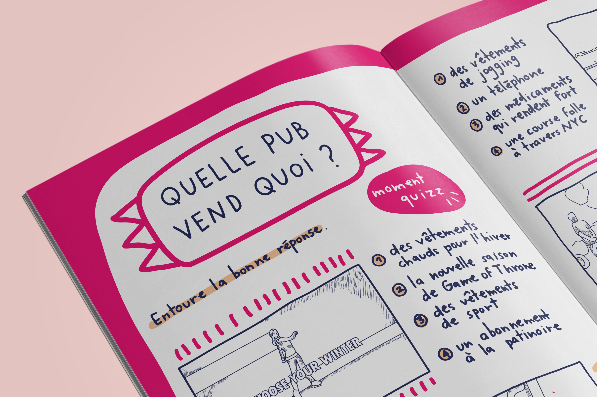
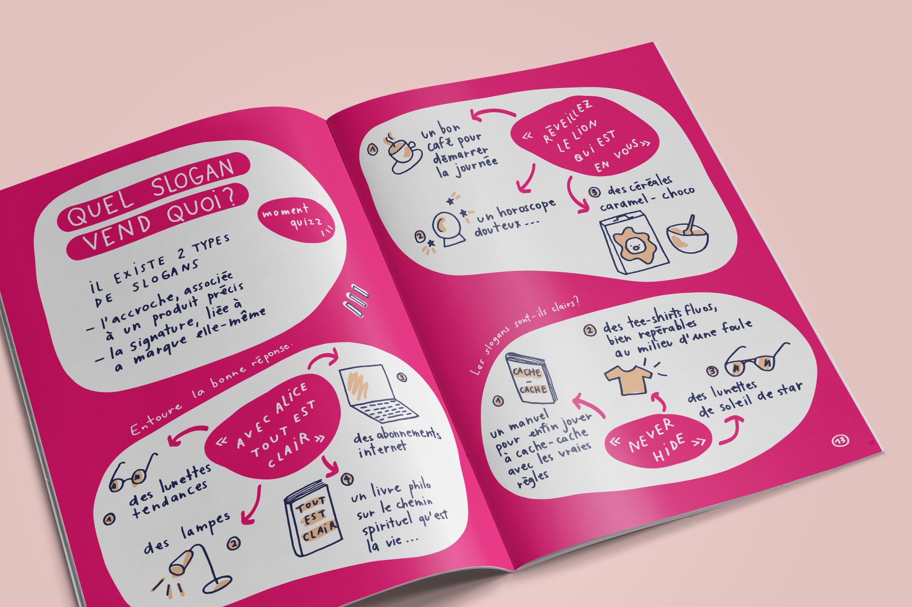
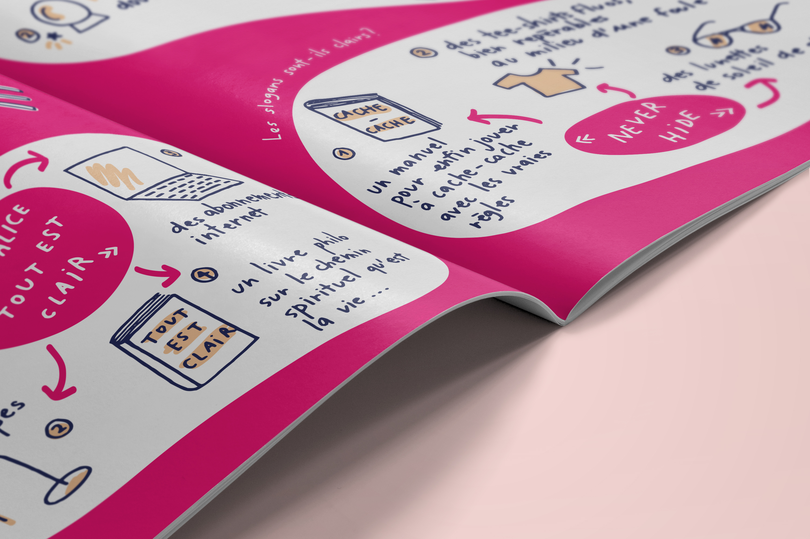
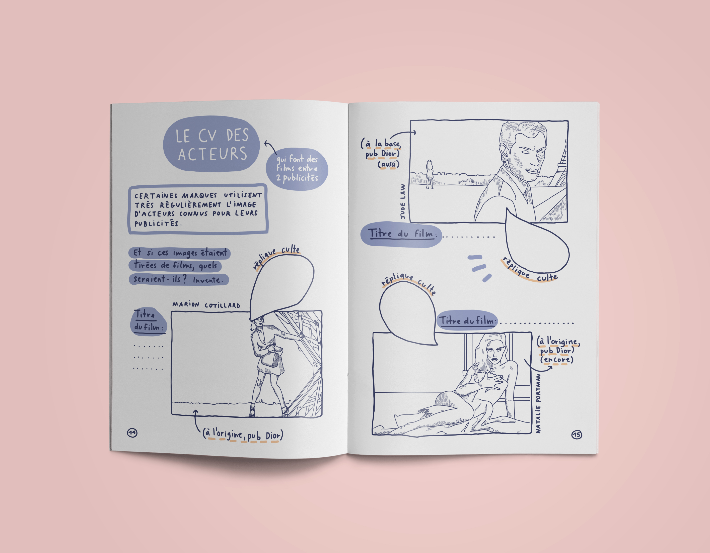
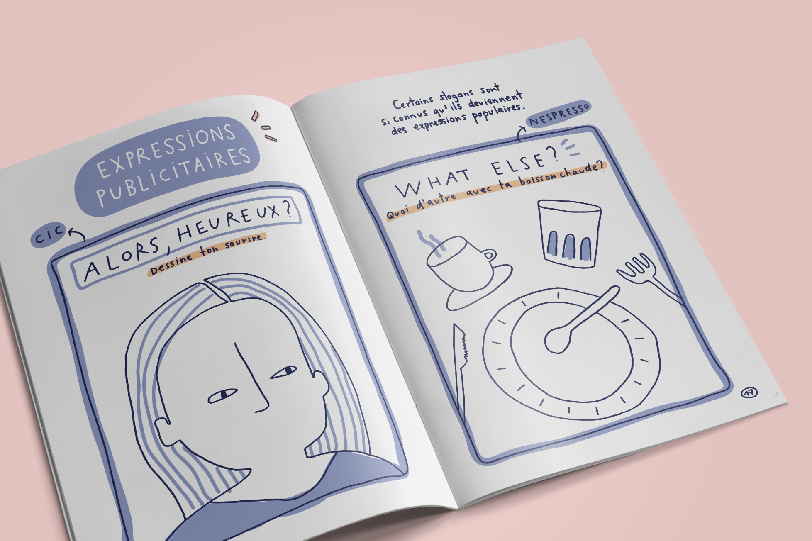
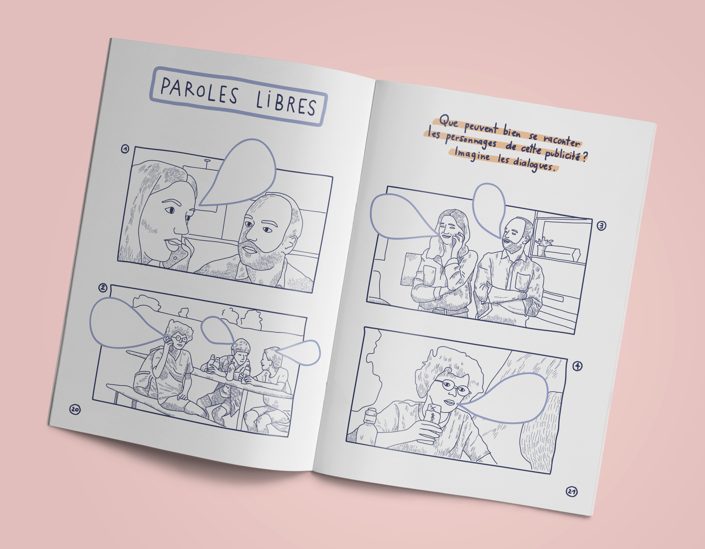
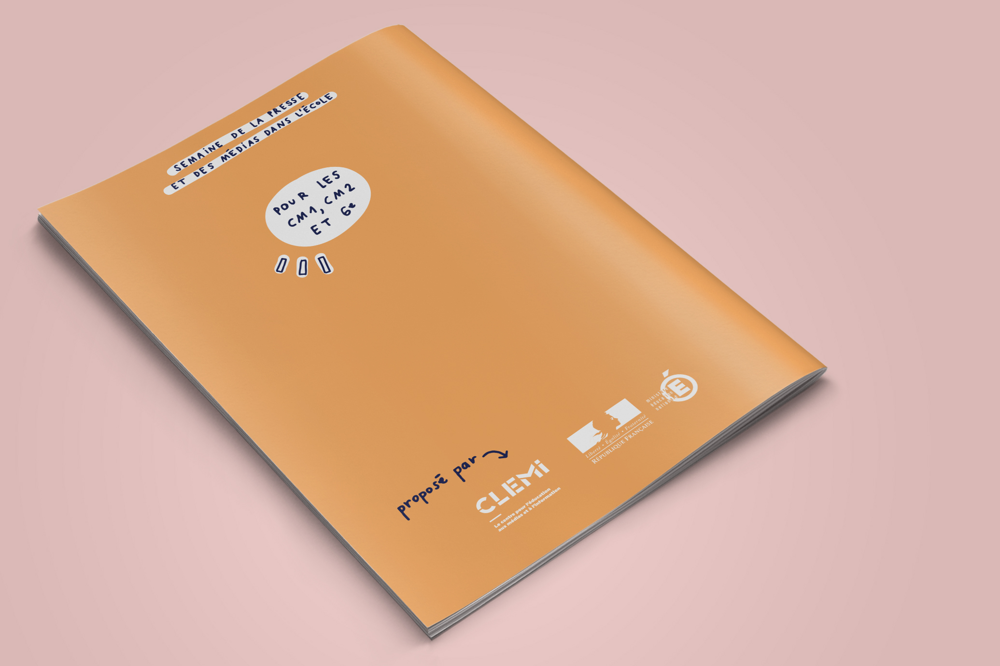

Cahier d'activités pédagogique
à destination des enfants
en classe de CM1, CM2 et 6e.
Outil de décryptage donnant
des clés pour observer, analyser
et comprendre l'environnement
visuel publicitaire.
Cahier commandité par le CLEMI dans le
cadre de la Semaine de la Presse et des Médias dans l'École.
Édition de 24 pages
(projet fictif)
Juin 2018









